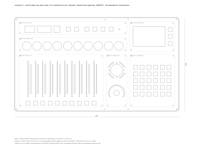

Control surface
Ten 100 mm faders, ten rotary encoders, and a 30-key matrix sit alongside a joystick, jog wheel, and display.
boxole / 01 — lighting console
Less between you and the light.

3D is unavailable in this browser. You can still explore the panel drawing and configure your finish.